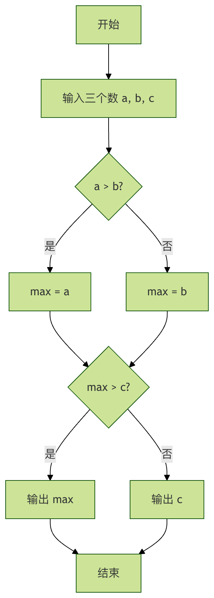

アルゴリズムの基礎と分析方法
計算機科学の世界では、アルゴリズムそれはコンピュータのレシピとも言えるもので、特定の問題を解決したり、具体的な計算タスクを完了したりするための、明確で有限かつ実行可能な命令の列です。スマートフォンのナビアプリが最短経路を計画してくれるのも、検索エンジンが瞬時に膨大なデータから最も関連性の高いWebページを見つけ出すのも、その背後では入念に設計されたアルゴリズムに依存しています。
アルゴリズムの基礎と分析方法を理解することは、すべてのプログラマーがコードを書く実装者から問題解決者へと歩を進めるための重要な一歩です。
本記事では、アルゴリズムの中核概念を体系的に理解し、アルゴリズムの優劣を科学的に評価する方法を学びます。
アルゴリズムの中核的特徴
要件を満たすアルゴリズムは、以下の5つの基本特性を備えている必要があります。これらは料理のレシピにたとえて理解できます。
- 有限性：アルゴリズムは有限のステップを実行した後に終了しなければなりません。レシピが宇宙の果てまで無限にかき混ぜることを要求しないように、明確な停止条件が必要です。
- 決定性：アルゴリズムの各ステップは正確に定義され、曖昧さがあってはなりません。例えば「塩を少々加える」は不確実ですが、「塩を5グラム加える」は確実です。
- 実行可能性：アルゴリズム内のすべての操作は基本的で実行可能でなければなりません。レシピに「念力で卵を溶く」と書くことはできません。
- 入力：アルゴリズムには入力が0個以上あります。これらの入力はアルゴリズムが処理する対象であり、レシピに必要な食材のようなものです。
- 出力：アルゴリズムには出力が1つ以上あります。出力は入力と特定の関係を持つ量であり、アルゴリズムを実行した結果です。最終的に出来上がった料理のようなものです。
アルゴリズムはどのように記述するのか？
アルゴリズムを記述する方法はいくつかありますが、最も一般的なのは次の3つです：
1. 自然言語による記述
人間の言語（中国語や英語など）でアルゴリズムの手順を記述します。理解しやすいのが利点ですが、正確さに欠け、曖昧さが生じやすいのが欠点です。
例：3つの数の中から最大値を見つける。
- 最初の数と2番目の数を比較し、大きい方を覚えておく。
- 前のステップで覚えた数と3番目の数を比較する。
- 大きい方を最大値として出力する。
2. フローチャート
図形化された記号を使ってアルゴリズムの制御の流れを表します。ステップ間の論理的な関係を直感的に示します。

フローチャートの説明：この図は、3つの数の最大値を求めるアルゴリズムの判断過程を明確に示しています。ひし形は条件分岐を、長方形は処理ステップを、矢印はプログラムの実行方向を表しています。
3. 擬似コード
自然言語とプログラミング言語の中間に位置する記述方法です。プログラミング言語に似た構造を用います（例えばif, for, while）。ただし、具体的な構文の詳細は無視して、論理的な表現に重点を置きます。
算法：FindMax 输入：三个数字 a, b, c 输出：最大值 max 1. if a > b then 2. max = a 3. else 4. max = b 5. end if 6. if c > max then 7. max = c 8. end if 9. 输出 max
4. プログラミング言語による実装
最終的に、アルゴリズムは何らかのプログラミング言語（Python、Java、C++など）のコードに変換され、初めてコンピュータ上で実行できます。
例
def find_max(a, b, c):
# まず a と b を比較し、大きい値を max_value に代入する
if a > b:
max_value = a
else:
max_value = b
# 次に max_value と c を比較する
if c > max_value:
max_value = c
return max_value
# テストコード
print(find_max(5, 9, 3)) # 出力：9
print(find_max(-1, 0, 1)) # 出力：1
出力結果：
9 1
アルゴリズム分析：アルゴリズムの良し悪しはどのように評価するのか？
問題を解決できるアルゴリズムを設計することは第一歩にすぎず、どのアルゴリズムがより良いかを判断する必要もあります。通常は2つの観点から評価します。
1. 時間計算量
測定するのは、アルゴリズムの実行に必要な時間がどのように入力データの規模（n）の増加に伴って増えるかです。注目するのは具体的な秒数ではなく、増加の傾向（漸近時間計算量）。
）一般的な時間計算量の比較：
| 計算量 | 名称 | 例（n=データ量） | 直感的なたとえ |
|---|---|---|---|
| O(1) | 定数階 | 配列のインデックスによる値の取得 | 「電気をつける」。部屋がどれだけ広くても、スイッチを押す時間は同じ。 |
| O(log n) | 対数階 | 二分探索 | 「辞書を引く」。毎回半分に絞り込むので、探索が非常に速い。 |
| O(n) | 線形階 | 配列の走査 | 「人数を数える」。一人ひとり数えるため、時間は総人数に比例する。 |
| O(n log n) | 線形対数階 | クイックソート、マージソート | 「分割してから統治するソート」。O(n²) よりはるかに速い。 |
| O(n²) | 平方階 | 単純選択ソート、バブルソート | 「二人ずつ握手する」。全員が他の全員と一度ずつ握手する。 |
| O(2ⁿ) | 指数階 | ハノイの塔を解く、総当たり（ブルートフォース） | 「細胞分裂」。増加が非常に激しく、少し大きい n でも耐えられない。 |
どのように分析するのか？ループと再帰に注目する。
- 単一のループ：通常は O(n)。
- ネストしたループ：通常は O(n²)（2つのループが両方とも n に関連する場合）。
- 二分探索の戦略：通常は O(log n)。
2. 空間計算量
測定するのは、アルゴリズムの実行に必要なメモリ空間がどのように入力データの規模（n）の増加に伴って増えるかです。入力データ自体の保存に加えて、アルゴリズムの実行中に追加で確保する配列や変数なども考慮します。
例の分析：
例
def find_max_in_list(lst):
max_val = lst[0] # 追加の変数を定数個しか使っていない
for num in lst:
if num > max_val:
max_val = num
return max_val
# 例2：空間計算量 O(n)
def copy_and_double_list(lst):
new_list = [] # 入力リストと同じ長さの新しいリストを1つ確保した
for num in lst:
new_list.append(num * 2)
return new_list
実践演習：ソートアルゴリズムから分析と応用を考える
それでは、定番のバブルソートを例に、以上の知識を総合的に活用してみましょう。
アルゴリズムの考え方
ソート対象のリストを繰り返し走査し、隣接する2つの要素を一度に比較して、順序が間違っていれば交換します。
交換が必要な要素がなくなるまでリストの走査を繰り返します。これはリストのソートが完了したことを意味します。小さい要素は気泡のように数列の先端へと徐々に浮かび上がります。
Pythonでの実装と行ごとの解説
例
"""
バブルソートアルゴリズム
引数 arr: ソート対象のリスト
戻り値: ソート後のリスト（元のリストを変更しつつ、それも返す）
"""
n = len(arr)
# 外側のループ：全体で何ラウンドの「バブル」を行うかを制御
for i in range(n - 1):
# このラウンドは整列済みと仮定して最適化する
swapped = False
# 内側のループ：1ラウンドのバブルを行い、最大の要素を最後に「沈める」
# 各ラウンドの後、最後の i+1 個の要素はソート済みなので、範囲は n-1-i
for j in range(0, n - 1 - i):
# 前の要素が後ろの要素より大きければ交換する
if arr[j] > arr[j + 1]:
arr[j], arr[j + 1] = arr[j + 1], arr[j] # Pythonの洗練された交換構文
swapped = True # 交換が発生した
# このラウンドで一度も交換が発生しなければ、リストは完全にソート済みなので、早期終了する
if not swapped:
break
return arr
# テストデータと検証
test_data = [64, 34, 25, 12, 22, 11, 90]
print(ソート前:, test_data)
sorted_data = bubble_sort(test_data.copy()) # copyを使用して元のリストが変更されないようにする
print(ソート後:, sorted_data)
# 結果が正しいかどうかを検証する
print(ソートは正しいですか?, sorted_data == sorted(test_data.copy())) # Pythonの組み込みソートの結果と一致するはず
出力結果：
排序前: [64, 34, 25, 12, 22, 11, 90] 排序后: [11, 12, 22, 25, 34, 64, 90] 排序是否正确? True
アルゴリズム分析
- 時間計算量：
- 最悪・平均の場合 O(n²)：リストが完全に逆順の場合、
(n-1) + (n-2) + ... + 1 = n(n-1)/2回の比較と交換が必要です。 - 最良の場合 O(n)：リストがすでにソート済みの場合、
swappedフラグによる最適化を加えると、1回の走査だけで交換がないことが分かり、早期終了できます。
- 最悪・平均の場合 O(n²)：リストが完全に逆順の場合、
- 空間計算量 O(1)：アルゴリズムが使用するのは、
i,j,swapped等の固定数の一時変数を使用し、インプレースソートアルゴリズム。
練習課題
- 手動シミュレーション：紙とペンでアルゴリズムを追跡し、リスト
[5, 3, 8, 1]をソートし、各ラウンドのバブル後のリスト状態を書き出します。 - 計算量実験：テストデータを変更し、それぞれソート済みのリスト（例：
[1,2,3,4,5]）と完全に逆順のリスト（例：[5,4,3,2,1]）でテストし、ループ回数を観察します（内側のループにカウンターを追加できます）。 - 改良を試みる：バブルソートと似た考え方で、もう少し効率的なソートアルゴリズムを考えられますか？（ヒント：各走査で最大の泡を1つ浮かべるだけでなく、同時に最小の泡も1つ沈めます）。
クリックしてノートを共有
ノートはこの記事の内容の拡張である必要があります！
記事投稿は、ここをクリック
登録招待コードの取得方法
ノートを共有する前にログインが必要です！
登録招待コードの取得方法